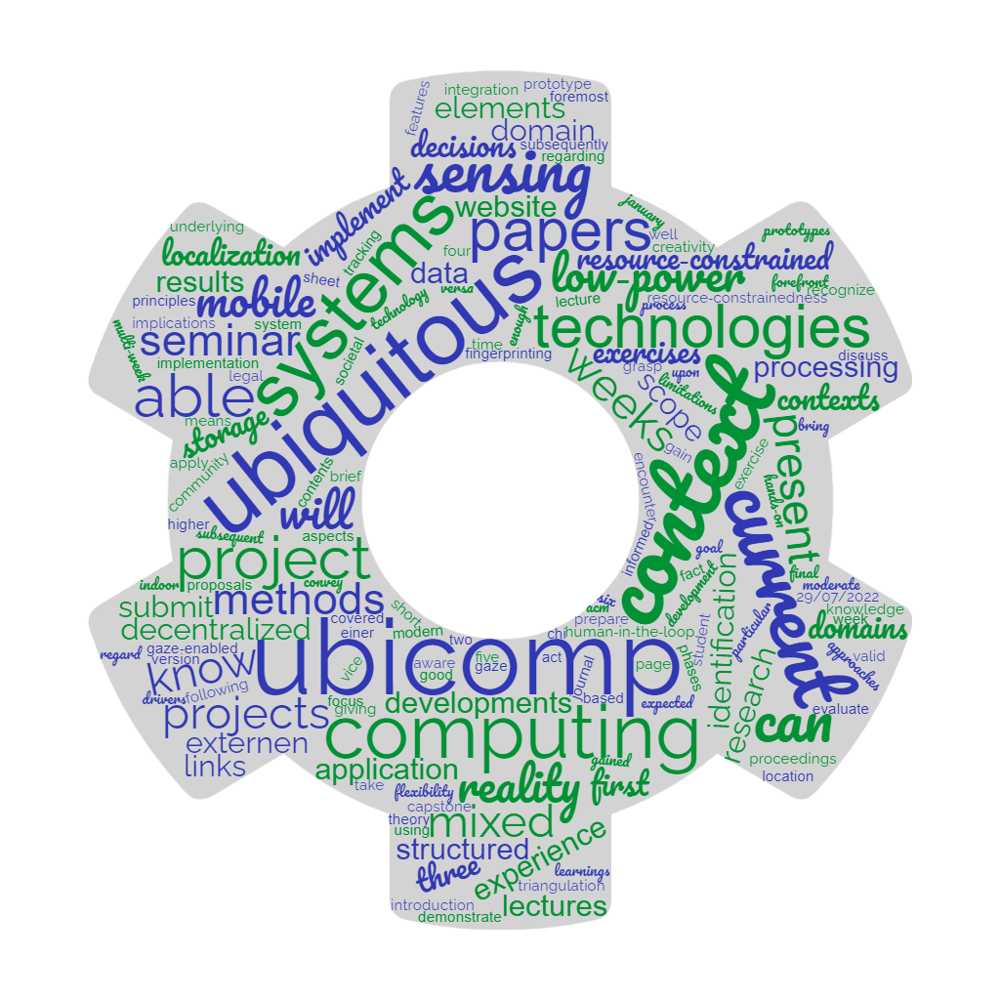
Exercise Session 8
Event-based Interaction
Alessandro Giugno, Luka Bekavac, Simon Mayer
University of St.Gallen
Master in Computer Science
Advanced Software and Systems Engineering (7,856)
From insight to impact.
Syllabus
Advanced Software and Systems Engineering | Institute of Computer Science | University of St.Gallen
2Today
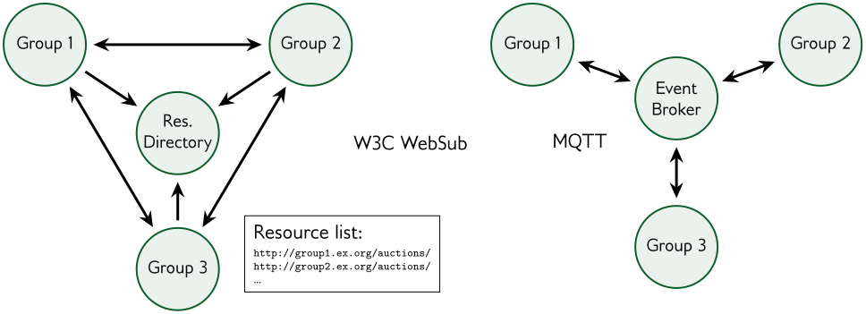
Advanced Software and Systems Engineering | Institute of Computer Science | University of St.Gallen
3PITAS Infrastructure Rules
They hold for Assignments 8 to 11. Your final presentation assesses each objective against its “Achieved when” column, using these terms.
- Component
- A kind of shared service: WebSub hub, MQTT broker, pod server, identity provider (Solid-OIDC issuer) or discovery service
- Instance
- One running deployment of a component at its own address, e.g. the HiveMQ public broker
- Operator
- The party that decides what runs on an instance and can stop it
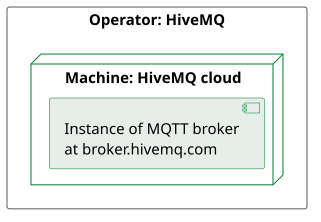
Advanced Software and Systems Engineering | Institute of Computer Science | University of St.Gallen
4Who Operates an Instance?
Rule 1: a group operates its group VM and any extra VM the course gives it.
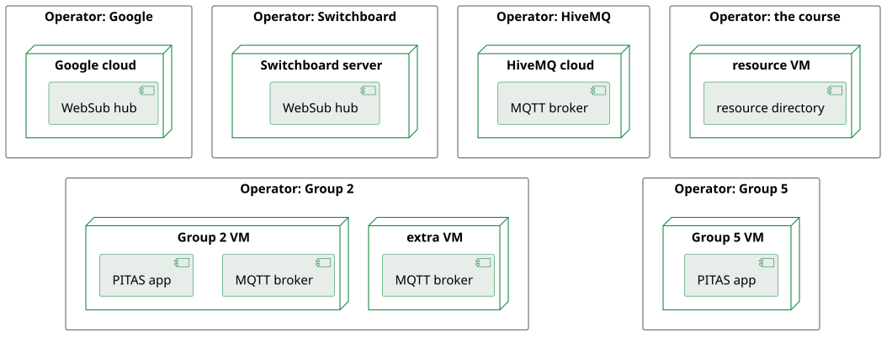
Advanced Software and Systems Engineering | Institute of Computer Science | University of St.Gallen
5Top row: the outside providers Google, Switchboard, HiveMQ and the course. Bottom row: two of the six groups.Self-Hosted or Foreign?
Rule 2: your own VMs are self-hosted. Rule 3: every other operator is a foreign provider.
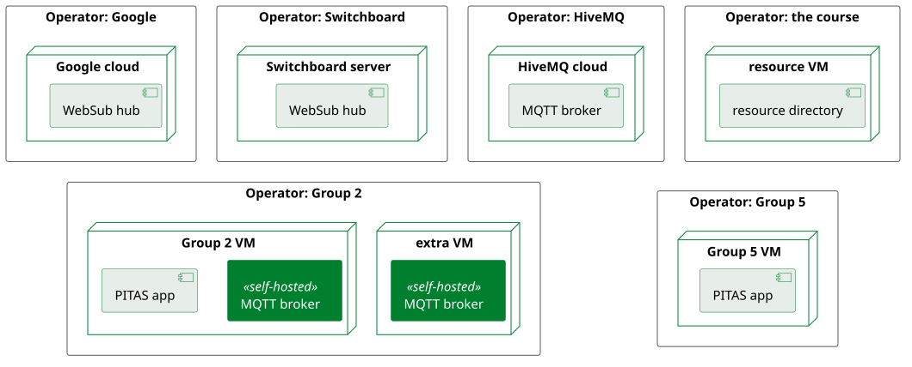
Advanced Software and Systems Engineering | Institute of Computer Science | University of St.Gallen
6Ask the room first; the next slide shows the answer.Self-Hosted or Foreign?
Rule 2: your own VMs are self-hosted. Rule 3: every other operator is a foreign provider.
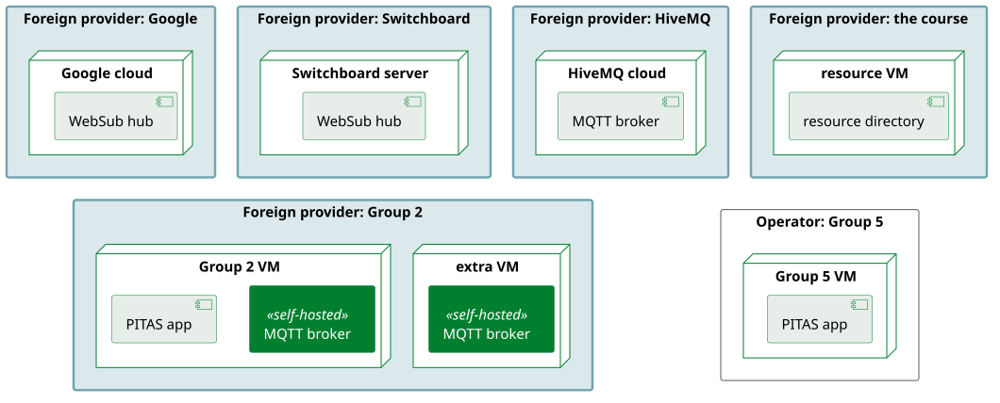
Advanced Software and Systems Engineering | Institute of Computer Science | University of St.Gallen
7Every operator except Group 5, Group 2 included (Rule 3). Group 2's brokers are self-hosted for Group 2 (Rule 2) and come from a foreign provider for Group 5.When Does an Instance Count?
Rule 4: an instance counts exactly when
- (a) the decision log lists it
- (b) it is reachable from every group VM
- (c) a group other than its operator uses it in a demonstration
- (d) if a group operates it, it runs on that group's VM or an extra VM from the course
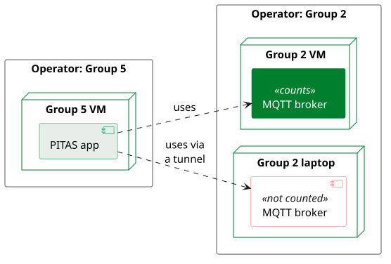
Advanced Software and Systems Engineering | Institute of Computer Science | University of St.Gallen
8One Service, Several Components
- Rule 5: a service counts once for each component it provides
- A Community Solid Server (CSS) is both a pod server and an identity provider
- You will learn more about the CSS in Assignment 9
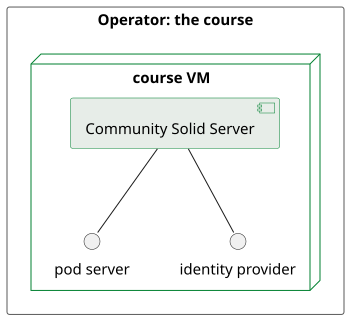
Advanced Software and Systems Engineering | Institute of Computer Science | University of St.Gallen
9Independently Operated
Rule 6: different operators, so no single party can reconfigure or stop both.
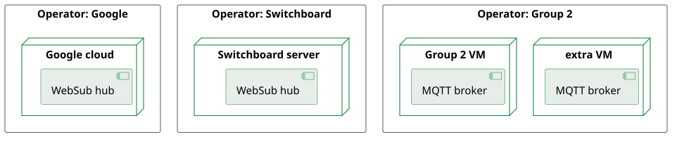
Advanced Software and Systems Engineering | Institute of Computer Science | University of St.Gallen
10No. Group 2 operates both of its VMs (Rule 1), so one party can stop both brokers.A Single Designated Instance
Rule 7: the only counting instance of a component, used by all six groups.
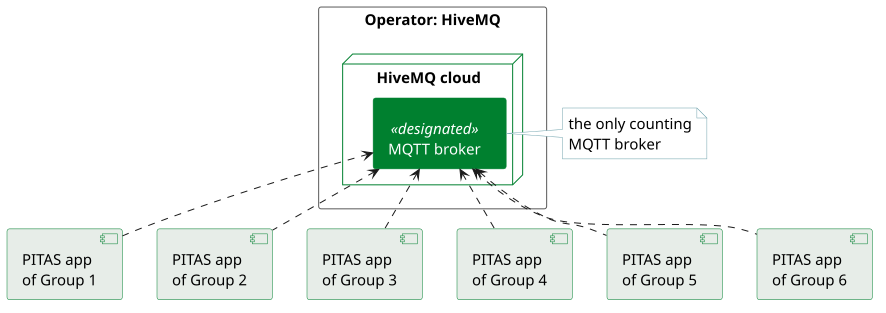
Advanced Software and Systems Engineering | Institute of Computer Science | University of St.Gallen
11A Fallback
- Rule 8: a second counting instance of the same component
- It has a different operator
- Groups use it alongside the first instance, or switch to it by changing configuration only
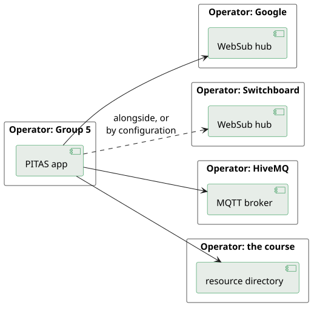
Advanced Software and Systems Engineering | Institute of Computer Science | University of St.Gallen
12Ask the room first; the next slide shows the answer.A Fallback
- Rule 8: a second counting instance of the same component
- It has a different operator
- Groups use it alongside the first instance, or switch to it by changing configuration only
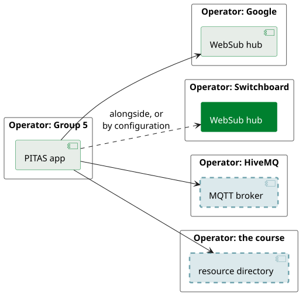
Advanced Software and Systems Engineering | Institute of Computer Science | University of St.Gallen
13Answer to the question: the MQTT broker (only HiveMQ) and the discovery service (only the course's resource directory). The WebSub hubs have a fallback: Google and Switchboard, once both count. A group can give the broker a fallback, e.g. a broker on its own VM that another group uses.The Decision Log Decides What Counts
- This week the task force decides
- which hubs and brokers the ecosystem relies on
- the topic structure, delivery guarantees and payload contents
- whether notifications are signed
- Several objectives in your role briefing depend on these decisions
- Record them as ADRs in the decision log of the task force
- Rule 9: the narrative parts of your role briefing, such as the memo, add no conditions to your objectives
Advanced Software and Systems Engineering | Institute of Computer Science | University of St.Gallen
14Any Questions / Comments / Doubts / Concerns?

Advanced Software and Systems Engineering | Institute of Computer Science | University of St.Gallen
15